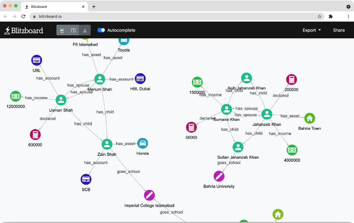

Blitzboard
Developing a versatile graph visualization tool with talented colleagues. Blitzboard allows users to create and explore complex graph data through a simple, intuitive interface, bridging data science and visual storytelling.優れた同僚たちと汎用グラフ可視化ツールを開発している。Blitzboardはシンプルで直感的なインターフェースを通じて、複雑なグラフデータの作成・探索を可能にし、データサイエンスとビジュアルストーリーテリングを橋渡しする。
Visit blitzboard.io →